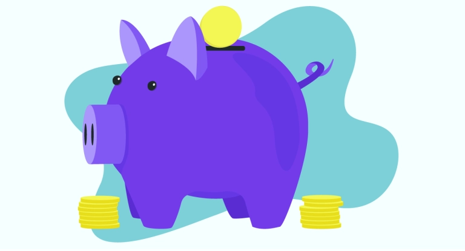

How to become rich?
-
Add Value
Adding value to yourself is a good foundation to begin your journey to being rich. Develop some knowledge or skills that justify someone paying you a good amount of money. Convince people that you are worth a large paycheck because you will add value to their lives in return.
-
Tax Yourself
A different way of looking at your savings is to view them as taxes. Once you pay your taxes, you never get the whole amount back. Treat your savings the same way. Set money aside in a savings account or transfer it to a totally separate account where you cannot touch it. Treat your savings like money that you will never get back, until the day that you get it all back at once.